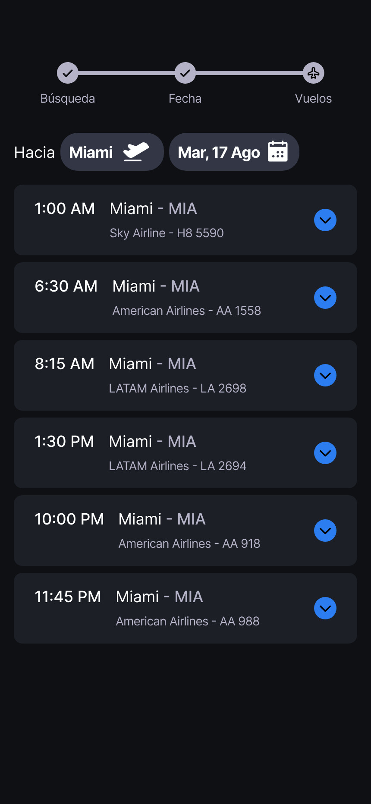
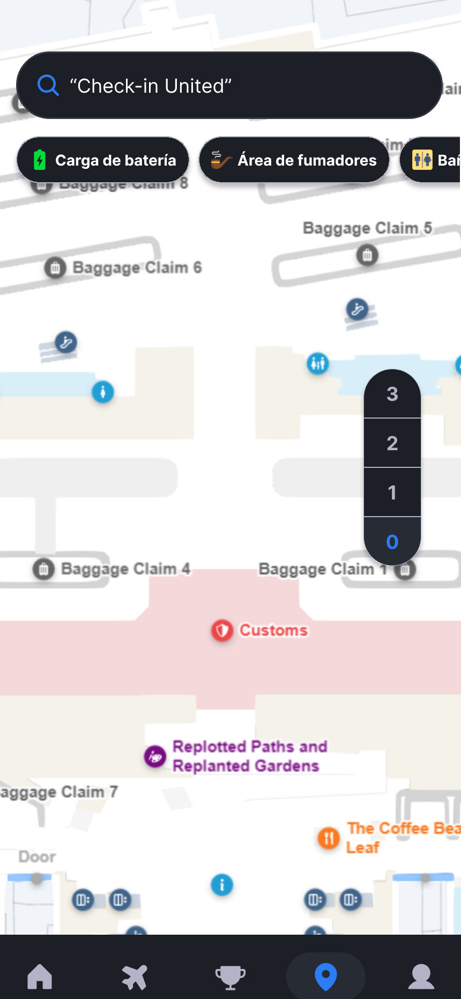
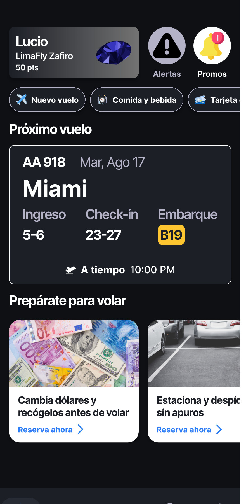

Two processes, not one
LimaFly pre-existed the selection process. The manager who later hired me read it informally, months earlier, and recommended I be given special consideration. It did not secure the role, and this page does not claim it did.
03 · AIRPORT APPS · AVIATION
A prototype I built for myself in 2024. A redesign written for the selection process that hired me in 2025. Then the real platform, from a desk inside the terminal. Three positions on one airport, and what each one could see that the others could not.
Three airport products, designed across 2024 and 2025 from three different distances — as an outsider with no brief, as a candidate answering a case, and as an employee with a seat inside the terminal. LimaFly was the app I built for myself: a passenger's whole airport day, from packing at home to boarding, and four people tested it before I had set foot in the industry. The lounges case was the airport's own hiring exercise — fix the booking experience for its pay-per-use VIP lounges — which I answered by working out what the bad experience was costing in lost sales. TUUA Transfer is the real one, live today: a new fee on connecting international passengers, whose payment screens I designed, tested and handed to the team that built them.
Between February and October 2024 I designed LimaFly, a high-fidelity prototype of the passenger journey through Jorge Chávez, with no relationship to the airport and no brief from anyone.
In the second quarter of 2025 the airport ran a selection process, and its case exercise asked for a redesign of the digital experience on its services platform. I answered it.
From May to October 2025 I held the seat — Especialista en Procesos e Innovación — on the programme that built a payment channel for a fee the airport had never collected.
LimaFly pre-existed the selection process. The manager who later hired me read it informally, months earlier, and recommended I be given special consideration. It did not secure the role, and this page does not claim it did.
The same person who read LimaFly informally facilitated the selection case formally, as líder de Procesos e Innovación. The report I wrote for that case opens by naming him in that role.
From outside I could design a whole journey and answer to no one. From inside I could design one screen set and answer to five divisions. Neither view is the complete one.
Access changes what you can see, and what you are entitled to say.
LimaFly is a high-fidelity prototype of one passenger's journey through Jorge Chávez: register a flight, receive an itinerary timed to it, find your way through the terminal, and earn something for the trouble.
It began in research, not in Figma. Before any screen existed I wrote a strategic study of the airport's operator — business model, process map, strategic profile — across twenty-two sections and forty-five tables, on fifteen APA-cited sources including Porter, Osterwalder, IATA, Fraport, OSITRAN and the operator's own annual reports. It closes on a table of seven insights.
The design reference was named on the record in 2024 and is not a story told afterwards. Slide 38 of my own deck reads "Changi App para LIM — IDEA ORIGINAL."
Nine numbered steps from packing to takeoff, filtered by three chips, two of them carrying a wait estimate in minutes rather than an adjective.
One field takes a city, an airport, an airline or a flight number. Three steps from opening the tab to a saved flight, with the reward for saving stated before you commit.
An indoor terminal plan, not a street map: numbered baggage carousels, a marked customs zone, pinned services, and a floor selector for moving between levels.
Named tiers — Zafiro and Plata — a running point balance, and a challenges set that feeds it. The loop between account, challenges and home is the design intent; it is not a path the prototype will walk you down.



LimaFly starts on a dashboard rather than a splash screen, and it starts with nothing in it. A loyalty card sits top-left — a traveller's name, the tier LimaFly Zafiro, a balance of 50 points — with Alertas and Promos as icon buttons beside it. Below, a Funciones grid of eight illustrated tiles covers what a passenger might want before a trip: add a flight, validate boarding, track baggage, reserve parking, buy ahead, reserve meals, change currency, book transport. Under that, a single empty card: Tus vuelos — Registra un vuelo para empezar.
That empty state is the design argument. The app has nothing useful to say until it knows which flight you are on, so it asks for one thing and holds everything else back.
The Vuelos tab opens a three-step search — Búsqueda → Fecha → Vuelos — with the step marker visible throughout.
Búsqueda offers a flight-type toggle, a single field that accepts a city, airport, airline or flight number, and three recent searches: Cusco (CUZ), São Paulo (GRU), Miami (MIA). Fecha asks ¿Cuándo es tu vuelo hacia Miami? over an August 2024 calendar. Vuelos returns six departures on the route, each row carrying departure time, city pair, airline and flight number — 1:00 AM Sky Airline HS 5590 through 11:45 PM American Airlines AA 988.
Choosing one expands that row in place rather than pushing a new screen, and the expansion states plainly what saving the flight buys: real-time flight notifications, security and immigration status, and promotions tied to that flight. A single Guardar vuelo button closes the flow.
Three steps from open to a saved flight, and the reward for saving is declared before you commit to it.
Saving opens the screen the rest of the prototype exists to reach: an itinerary for AA 918 hacia Miami. It leads with the facts — LIM 10:00 PM to MIA 4:55 AM, both on time — then converts them into the three moments that actually govern a passenger's day: Ingreso 5-6, Check-in 23-27, Embarque B19. A counter reads 9 días para volar.
Two controls sit above the itinerary proper. A Hora Punta card warns that security and immigration will run slow at this hour. A Notificaciones switch, on by default, offers alerts for changes and delays.
Then Tu Itinerario, and this is the part worth reading slowly. Three filter chips personalise it — international flight, virtual check-in already done, carry-on only — and the airport day unfolds as nine numbered steps:
Preparativos — plan before leaving for the airport.
Hacia el Aeropuerto — how you will get there: express lane, buses and taxis, or parking.
Llegada al Aeropuerto — enter by doors 5-6.
Check-in y Equipaje, from 4:30 PM — counters 23-27.
Control de Seguridad — estimated 5-10 minutes, with a note that laptops, liquids, passport and boarding pass can stay in the bag.
Control de Migraciones — estimated 0-15 minutes, with the assigned queue and required documents.
Tiendas y Restaurantes — what is open airside.
Embarque — gate B19, with boarding priority noted.
Despegue, 6:45 PM — and, if you missed it, advice on what to do next.
Two of those steps carry time estimates in minutes. That is the whole thesis of the prototype in one detail: a passenger does not want to be told an airport is busy, they want to be told how many minutes the queue will cost them.
The map is an indoor terminal view rather than a street map. A search bar takes a direct query — Check-in United is the example — with filter chips beneath it for the things people actually hunt for: charging, a smoking area, restrooms. The plan renders the terminal as it is: baggage carousels numbered and placed, the customs zone marked in red, an information desk and a café pinned where they sit, and a floor selector down the right edge for moving between levels.
Loyalty is not a separate destination in this build — it sits on the dashboard, where the traveller already is. The card carries a named tier, Zafiro, against a sapphire treatment, and a running points balance. A Desafíos section carries the challenges that earn those points, and the profile holds the account. The design intent is a loop rather than a page: complete a challenge, earn points, see them on the screen you open every time.
This is a design prototype, not a build. One journey is wired end to end — registering a flight and receiving the itinerary — because that journey is the argument. The map and the challenges screen were designed and are shown here as stills; they are not clickable inside the embed, and the dashboard's populated state is likewise a still rather than a place the prototype will take you. Anyone who wants to check that claim can: the prototype is above, it is public, and it does exactly what this paragraph says it does.
The research produced a person to design for: a forty-year-old Brazilian father travelling with a nine-year-old, limited in both Spanish and English, carried through a typical scenario and a critical one.
Four people ran a low-fidelity round against fifteen mission screens and three scenarios — registration, the commercial experience, and disruption. Their verbatim responses survive per participant across eleven task sections, alongside the consent form, the protocol and the screens they were shown.
The round also collected scored measures — CES, CSAT, SUS and NPS — and those results fed the high-fidelity build. This page reports none of them. Everything below is built from what the four participants actually said, which is the record I can put in front of you.
Emergency SOS and Notifications were designed and tested at low fidelity — two Emergency screens and one Notifications screen, each with its own section in the verbatim record. Neither is a screen in the high-fidelity build. That is an allocation decision, not a verdict on the features: the low-fidelity round had already answered those questions, so high fidelity went to what it had not answered — the core of the passenger experience.
Re-rendering a screen you have already tested buys a portfolio a full build and buys the design nothing.
What survives of that work in the shipped prototype is at control strength, and this page states it at exactly that strength: a Notificaciones switch on the itinerary, on by default, offering alerts for changes and delays, and a link at step nine to advice if you missed the flight. Neither is a screen.
So the high-fidelity prototype evidences a journey spine, search, wayfinding and a loyalty loop. It does not evidence disruption mitigation, and this chapter does not claim it. The wait estimates and the peak-hour card are congestion forecasting under normal operations — the journey spine, not a disruption capability.
One journey is wired end to end because that journey is the argument. Four of the five tabs do nothing, and you read that here before you find it out there.
Case-exercise figures. Every number in this chapter comes from a selection-process exercise: the airport's own case prompt, public sources, and my modelling on top of them. None of it is live Lima Airport financial data and none of it should be read as such.
The brief was the digital experience across the airport's services platform. I narrowed it to one product — pay-per-use VIP lounge reservations — on commercial potential and implementation feasibility, and treated the reservations platform as a non-aeronautical revenue asset rather than a website.
Then I built the funnel from public figures: 27.44M passengers projected for 2025, 14.27M of them relevant, 2.14M lounge users, 0.713M paying per use. At a 58% conversion rate, abandonment costs $4.04M a year — $1.44M of it attributable to usability and $2.6M to technical failure.
The redesign came from a heuristic study of three products that already solve it — Paris-Charles de Gaulle, BookFHR and Flixbus — each read against a named Nielsen heuristic rather than against taste.
$21 per use: $15 to the lounge operator, $5 to the airport, $1 platform fee — $13.50 of it reaching the airport per passenger.
Landing page, explore, pay-per-use reservation, date, checkout, details, payment — drawn as a flow diagram, with decision diamonds and loops deliberately left out for legibility and said so on the page.
Seven phases from initiation to support, on a Gantt, carrying its own caveat: development and test durations to be validated with IT, and scope to be defined to include team training.
Net Promoter Score, Customer Effort Score and task success rate, owned by Procesos e Innovación, against a conversion target moving 58% to 73% — recovering the usability share of the abandonment, not the technical share.
The demand benchmark behind the model — pay-per-use lounge adoption across eight comparator airports, from Singapore to Melbourne — was produced with Google Gemini's Deep Research, and the model still carries the section labelled DEEPSEARCH where it landed.
This is the only chapter written to a brief the airport set, and the only one where someone else decided what the problem was.
He understands the platform's mechanism and contributed to its UX/UI design — not its development, deployment or operation.
TUUA Transfer is a charge on international-transfer passengers at Jorge Chávez and a new line of airport revenue. It runs today against more than 130,000 of them a month.
Five divisions each held a piece of it — Finanzas, Operaciones Aeroportuarias, TI, Comercial and Reputación — and engineering was waiting on a definition.
My deliverables closed on 4 August 2025, and the closure mail lists them: technical scopes for the platform and for the payment gateway, the screen mockup and web prototype, the operational casuistry estimating web-payment usage, and the process map — a blueprint for the physical payment points and a flowchart for the web one.
Stakeholder review sessions for the digital platform, and field observation at the physical payment booths, evidenced by two pre-trial surveys and a set of qualitative notes. They are different methods answering different questions, and neither stands in for the other.
The same closure mail states that development would add one to two screens beyond the ones I proposed, with minor adjustments, gated on Billing's approval of the final version. The line between my deliverable and the vendor's is written into the programme's own documents, not only into my account of it.
The programme charter's stakeholder table does not list me as its owner. That is the accurate record and this page keeps it.
Public, unauthenticated pages only. No transaction was submitted, no session was captured, and no data was collected beyond what any visitor sees.
Four screens are reachable before the payment control itself: the homepage, an eligibility self-declaration, a flight-details screen carrying the fee, and a customer-details screen. The pass stops there, deliberately, one control short of paying.
Personal-data capture was not removed from my proposal — it was reordered to follow the flight lookup rather than precede it, and I measured it doing exactly that on the customer-details screen. I read the reordering as intuitive and do not contest it.
The fee is settled at $11.86, shown a full screen earlier than I proposed, and consistent between its two appearances — $23.72 for two passengers. Fee-setting was never my decision, so the live figure is the correct reference rather than a delta against the $11.32 in my mockup.
Eligibility is gated by a self-declaration click — "Soy ese tipo de pasajero" — rather than the automatic agreement check the technical scope specified. To my own knowledge of the build, that check was never implemented as written. This pass could not see past its own boundary to confirm it.
Six findings: one major, five minor, none critical. The major one is a screen headed "Ingresa tus datos personales y de tu vuelo" whose only fields are flight data.
I can read the gap between proposal and build in public, which is a better position than having to describe it.
A complete high-fidelity design of a passenger journey, on a component set with tokens and variants, tested with real people at low fidelity, with a documented decision about where fidelity was spent. It never shipped, and nothing here says it did.
A costed, benchmarked, planned and measured redesign proposal, written to a brief the airport set. It was an answer to a selection case. It was not implemented, and nothing here says it was.
The design, prototype, evaluation and handoff of a platform that is live today. Not its development, not its deployment, not its operation — the notice at the top of that chapter says so in the programme's own terms.
Every claim on this page is the smallest one the evidence supports.